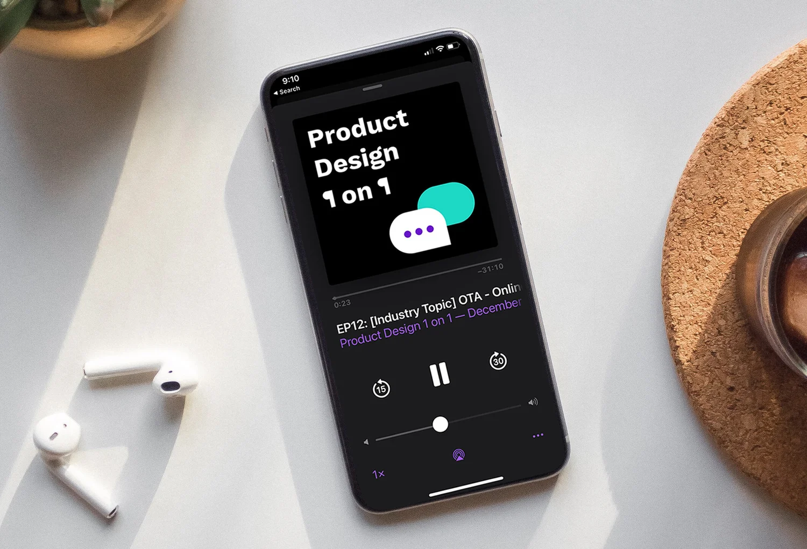

Product Design 1:1 Podcast
In early 2020, COVID-19 reshaped how people lived and consumed information—movie theaters gave way to streaming, dining out to delivery, meetups and conferences to webinars. Podcasts surged as a primary way to learn and connect. Rice Tseng and I had each spent more than a decade in digital product design and wanted to use that format to publish our design conversations in Mandarin and support the broader design community.

Why we started
The pandemic accelerated a shift in habits: people looked for depth, companionship in long-form audio, and voices they trusted while working from home. We saw an opening to talk honestly about design leadership, collaboration, interviews, and the messy parts of craft—topics that resonated in 1:1s with designers every week, but rarely had a public, language-accessible home for Mandarin-speaking practitioners.
What we shipped
- Co-host. Recorded and published with Rice Tseng as an ongoing partnership, not a one-off series.
- Volume. 20+ episodes to date, with conversations across design culture, careers, and practice.
- Guests. Interviewed 10+ design experts bringing different companies, levels, and perspectives into the same conversational format.
- Language. Episodes are in Mandarin, available on major podcast platforms.
Listen
Episodes are on Apple Podcasts and Spotify.
Outcome
The show became a durable channel for design dialogue in Mandarin—more than a side project, it is a long-running body of work that connects listeners with practical framing on careers, collaboration, and craft. We keep publishing; specifics on reach stay light here, but the catalog on Apple Podcasts and Spotify is the living record.